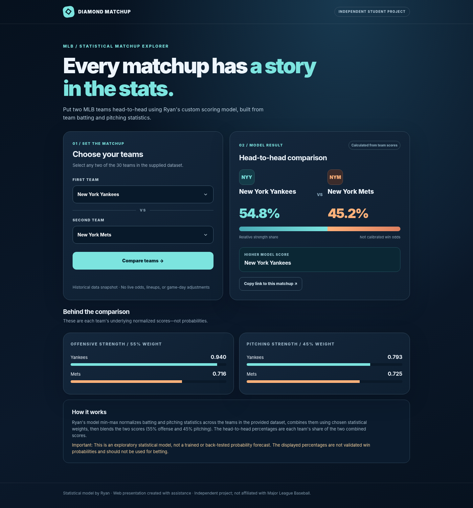
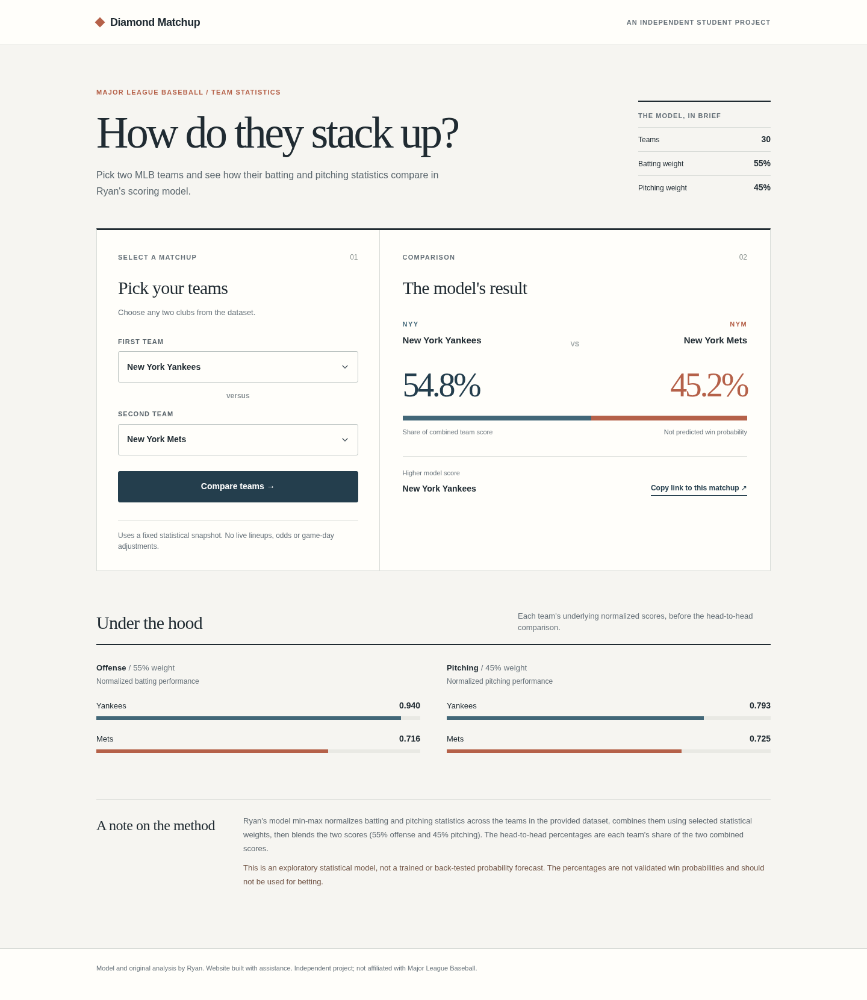

Version 01
Original dashboard
A bold, dark sports-analytics look with prominent results and graphic comparison panels.
View working version →Ryan's student project / design review
These two working versions use the same MLB statistics and team-strength calculations. Choose a style to try the predictor and compare how each one presents the results.

A bold, dark sports-analytics look with prominent results and graphic comparison panels.
View working version →
A quieter, research-oriented presentation with pared-back typography and minimal visual noise.
View working version →Design comparison for Ryan's MLB Matchup Predictor. Both versions display relative model score shares, not validated game-win probabilities. Data comes from the original supplied project files.